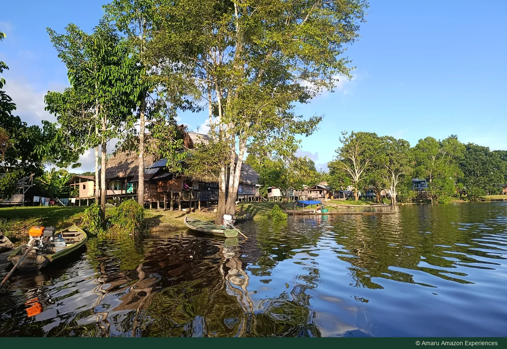

Puerto Nariño · Amazonía colombiana
Lago Tarapoto y avistamiento de delfines
Recorre los canales en busca de delfines de río y de la belleza tranquila de los lagos.
Consultar con Amaru por WhatsApp ↗
Sobre esta experiencia
Descubre el entorno del lago Tarapoto de día, con tiempo para sus paisajes y la búsqueda de delfines de río. Esta experiencia se centra en el lago y su fauna, a diferencia del kayak o las caminatas de selva. Los delfines viven en libertad: cada salida es distinta y no se garantiza su avistamiento.
El lago Tarapoto forma parte de un conjunto de lagos, ríos y quebradas cercano a Puerto Nariño, en el Amazonas colombiano. El complejo está reconocido como Humedal de Importancia Internacional por la Convención Ramsar y es hábitat de delfines de río, peces y aves. Mirarlo con calma permite descubrir un paisaje en el que el agua conecta distintas formas de vida.
Además de buscar delfines, vale la pena detener la mirada en las orillas, los reflejos y la actividad alrededor del agua. El encuentro que esperas puede ser un instante; el paisaje del lago acompaña toda la experiencia. Observa con paciencia y respeto: la fauna vive en libertad y cada visita es diferente.
Fuentes del contexto del destino: Ramsar ↗
Qué explorar
- Paisajes de río y lago
- Delfines si las condiciones lo permiten
- Punto de encuentro y duración por confirmar
Antes de salir
- Momento del día
- DIURNO
- Duración
- Confirma con Amaru la duración y el punto de encuentro para tus fechas.
Prepara protección solar, agua y una bolsa impermeable para tus pertenencias. Ten la cámara a mano sin exponerla al agua. Antes de salir, confirma con Amaru el punto de embarque, la embarcación, el equipo de seguridad y las condiciones de acceso; no des por incluidos traslados ni equipos.
¿Qué debo confirmar?
Pregunta por la ruta, la salida, los requisitos del grupo, el idioma del guía, el equipo, los traslados y los servicios incluidos. Comparte tus fechas y número de viajeros, y revisa el precio total y las condiciones de cancelación antes de confirmar.
Las rutas dependen del nivel del agua, el clima y las condiciones locales. Los avistamientos de fauna no se pueden garantizar.
AMARU AMAZON EXPERIENCES
Planea esta experiencia
Elige esta experiencia por separado o conversemos sobre cómo integrarla a tu viaje. Una consulta no confirma una reserva y esta web no recibe pagos.
Consultar con Amaru por WhatsApp ↗